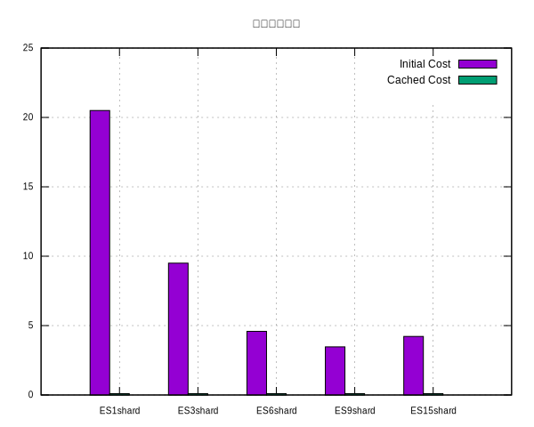

ElasticSearch Part1
最近几年elastic推出了elastic lisence, elastic 认证以对 elastic 的实操性考察难度而闻名. But, 我认为这证明了他们对人才市场挖掘的雄心.
Introduction
记得多年以前看过 Elastic 官方的概述, 其中讲到了 Elastic 公司的发展. Elastic 是一家典型的以开源软件为模型的盈利性的公司. Elastic 早年在发展期间进行了很多免费的公开培训, 实际上培训的过程首先是推广了 Elastic 的知名度, 其次 Elastic 举办方也在这期间发掘优秀的人才收为己用, 是一种非常卓越的招聘手段. 最近几年 Elastic 又推出了Elastic Lisence, Elastic 认证以对 Elastic 的实操性考察难度而闻名. 我认为这证明了他们对人才市场挖掘的雄心.
Elastic是一家快速发展的公司, 唯一想吐槽的点我认为其文档过于庞杂. 当然些事情丝毫不会影响到Elastic在搜索领域中的领先的市场份额和排名.
Install & config
-
use package manager
安装步骤:
-
下载deb安装包
-
执行安装
-
修改配置, 最简单的设置所有ip可访问, 不添加安全权限
-
设置操作系统ulimit
-
启用elasticsearch服务
-
启动服务
wget https://artifacts.elastic.co/downloads/elasticsearch/elasticsearch-8.9.1-amd64.deb sudo dpkg -i elasticsearch-8.8.2-amd64.deb sudo systemctl enable elasticsearch.service sudo vim /etc/elasticsearch/elasticsearch.yml # setting your config sudo su ulimit -n 65535 su elasticsearch sudo systemctl restart elasticsearch sudo journalctl –unit elasticsearch
-
-
use uninsatll package
https://www.elastic.co/downloads/past-releases/elasticsearch-8-8-2
wget https://artifacts.elastic.co/downloads/elasticsearch/elasticsearch-8.8.2-linux-x86_64.tar.gz tar -xvf elasticsearch-8.8.2-linux-x86_64.tar.gz -
Directory layout of Debian package
https://www.elastic.co/guide/en/elasticsearch/reference/8.9/deb.html#deb-layout
bin /usr/share/elasticsearch/bin
UnInstall
sudo dpkg -P elasticsearch # uninsatll
sudo apt-get --purge autoremove elasticsearch
sudo rm -rf /var/lib/elasticsearch/
sudo rm -rf /etc/elasticsearch
Architecture
Elastic search 在存放数据的时候, 需要有先将数据存储至主分片, 再根据复制规则将数据存储至不同的子节点.
路由只有到了elasticsearch的协调节点以后才知道具体应该到哪个节点写或者具体应该从哪些节点读. 在发送请求时这些信息都是不明确的.
- 协调节点: 用户可以访问任意一个节点来获取elastic的集群的数据
- 分片数量: 写数据的时候有路由规则决定如何路由至某个特定的分片来写入
- 副本数量: 读数据的时候根据数据副本存放的节点来进轮询路由访问
- 分词器: IK分词器, 分词粗细粒度的设置, 可设置扩展词汇（IK提供的功能, ikplugin/config/custom.dic）
- 一致性: one, 只有当主节点存储成功则客户端就可以查询、all, 只有所有的子节点都成功同步好数据以后客户端才能查询这个数据
Restful Api
| post | 非冥等 |
| put | 冥等 |
#创建索引, 并设置分片数量 , 分片数量是影响查询性能的主要因素之一
PUT http://cloudtencent.com:9200/shopping
{
"settings": {
"number_of_shards": 15
}
}
#将一个索引的数据同步至另外一个索引, 设置一次性按多少条记录来提交
POST http://cloudtencent.com:9200/_reindex?slices=9&refresh&wait_for_completion=false
{
"source": {
"index": "shopping",
"size": 10000
},
"dest": {
"index": "shopping_test_15"
}
}
#设置doc的副本
PUT http://cloudtencent.com:9200/shopping/_settings
{
"number_of_replicas": 1
}
#查看索引
GET http://cloudtencent.com:9200/shopping
#查看所有索引
GET http://cloudtencent.com:9200/_cat/indices?v
#删除索引
DELETE http://cloudtencent.com:9200/shopping
#创建数据
# POST http://cloudtencent.com:9200/shopping/_create
POST http://cloudtencent.com:9200/shopping/_doc
Content-Type: application/json
{
"title":"小米手机",
"category":"小米",
"image":"http://www.baidu.com",
"price":39999.00
}
#创建数据带id
POST http://cloudtencent.com:9200/shopping/_doc/1002
Content-Type: application/json
{
"title":"荣耀手机",
"category":"华为",
"image":"http://www.baidu.com",
"price":19999.00
}
#查询文档,指定id
GET http://cloudtencent.com:9200/shopping/_doc/1001
#查询所有的数据
GET http://cloudtencent.com:9200/shopping/_search
#修改数据
PUT http://cloudtencent.com:9200/shopping/_doc/1001
Content-Type: application/json
{
"title":"小米手机v3",
"category":"小米",
"image":"http://www.baidu.com",
"price":29999.00
}
# 部分更新
POST http://cloudtencent.com:9200/shopping/_update/1001
Content-Type: application/json
{
"doc": {
"title": "小米手机v4"
}
}
# 删除数据
DELETE http://cloudtencent.com:9200/shopping/_doc/1001
# 条件查询
GET http://cloudtencent.com:9200/shopping/_search
Content-Type: application/json
{
"query": {
"match": {
"category": "小米"
}
}
}
# 全查询
GET http://cloudtencent.com:9200/shopping/_search
Content-Type: application/json
{
"query": {
"match_all": {
}
}
}
# 分页查询
GET http://cloudtencent.com:9200/shopping/_search
Content-Type: application/json
{
"query": {
"match_all": {}
},
"from": 0,
"size": 2
}
# 选择列及排序
GET http://cloudtencent.com:9200/shopping/_search
Content-Type: application/json
{
"query": {
"match_all": {}
},
"from": 0,
"size": 3,
"_source": [
"title"
],
"sort": {
"price": {
"order": "asc"
}
}
}
# 多条件查询及过滤
GET http://cloudtencent.com:9200/shopping/_search
Content-Type: application/json
{
"query": {
"bool": {
"should": [
{
"match": {
"category": "小米"
}
},
{
"match": {
"category": "华为"
}
}
],
"filter": {
"range": {
"price": {
"gt":30000
}
}
}
}
}
}
# 全文查询,小华拆成小、华然后再做全文匹配
# 高亮显示
GET http://cloudtencent.com:9200/shopping/_search
Content-Type: application/json
{
"query": {
"match_phrase": {
"category": "华为"
}
},
"highlight": {
"fields": {
"category": {}
}
}
}
# 聚合操作
GET http://cloudtencent.com:9200/shopping/_search
Content-Type: application/json
{
"aggs": {
"price_group": {
"terms": {
"field": "price"
}
}
},
"size" : 0
}
# 平均操作
# GET http://cloudtencent.com:9200/shopping/_search
GET http://cloudtencent.com:9200/shopping/_search
Content-Type: application/json
{
"aggs": {
"price_avg": {
"avg": {
"field": "price"
}
}
},
"size" : 0
}
#创建索引
PUT http://cloudtencent.com:9200/user
#elastic 映射
PUT http://cloudtencent.com:9200/user/_mapping
Content-Type: application/json
{
"properties": {
"name": {
"type": "text",
"index": true
},
"sex": {
"type": "keyword",
"index": true
},
"tel": {
"type": "keyword",
"index": false
}
}
}
# 查询映射
GET http://cloudtencent.com:9200/user/_mapping
# 增加数据
POST http://cloudtencent.com:9200/user/_doc/1001
Content-Type: application/json
{
"name":"小米",
"set":"男",
"tel":"18729038467"
}
#查询
GET http://cloudtencent.com:9200/user/_search
Content-Type: application/json
{
"query": {
"match": {
"tel": "18729038467"
}
}
}
Java SDK
-
Dependency
<dependency> <groupId>org.elasticsearch.client</groupId> <artifactId>elasticsearch-rest-high-level-client</artifactId> <version>7.17.12</version> </dependency> <!--springboot的elasticsearch服务--> <dependency> <groupId>org.springframework.boot</groupId> <artifactId>spring-boot-starter-data-elasticsearch</artifactId> </dependency> <dependency> <groupId>jakarta.json</groupId> <artifactId>jakarta.json-api</artifactId> <version>2.0.1</version> </dependency> <dependency> <groupId>jakarta.json</groupId> <artifactId>jakarta.json-api</artifactId> <version>2.0.1</version> </dependency> <dependency> <groupId>org.apache.httpcomponents</groupId> <artifactId>httpclient</artifactId> <version>4.5.13</version> </dependency> -
Configure
Here we provide a bean named ElasticsearchClient.
package pkg.service; import org.apache.http.HttpHost; import org.apache.http.auth.AuthScope; import org.apache.http.auth.UsernamePasswordCredentials; import org.apache.http.client.CredentialsProvider; import org.apache.http.impl.client.BasicCredentialsProvider; import org.elasticsearch.client.RestClient; import org.springframework.context.annotation.Bean; import org.springframework.context.annotation.Configuration; import co.elastic.clients.elasticsearch.ElasticsearchClient; import co.elastic.clients.json.jackson.JacksonJsonpMapper; import co.elastic.clients.transport.ElasticsearchTransport; import co.elastic.clients.transport.rest_client.RestClientTransport; /** * @time 2023-09-04 15:02:32 **/ @Configuration public class ElasticSearchConf { @Bean public ElasticsearchClient restClient() { final CredentialsProvider credentialsProvider = new BasicCredentialsProvider(); credentialsProvider.setCredentials(AuthScope.ANY, new UsernamePasswordCredentials("elastic", "*****")); HttpHost nodeNodotOne = new HttpHost("172.10.0.1", 9200); HttpHost nodeNodotTwo = new HttpHost("172.10.0.2", 9200); HttpHost nodeNodotThree = new HttpHost("172.10.0.3", 9200); HttpHost[] elasticSearchNodes = new HttpHost[] { nodeNodotOne, nodeNodotTwo, nodeNodotThree }; // support multiple node RestClient httpClient = RestClient.builder(elasticSearchNodes) .setHttpClientConfigCallback(httpClientBuilder -> { httpClientBuilder.setDefaultCredentialsProvider(credentialsProvider); return httpClientBuilder; }).build(); ElasticsearchTransport transport = new RestClientTransport( httpClient, new JacksonJsonpMapper()); ElasticsearchClient esClient = new ElasticsearchClient(transport); return esClient; } } -
Usage
package pkg.controller; import java.io.IOException; import javax.validation.Valid; import com.longda.fegion.dto.Result; import org.springframework.beans.factory.annotation.Autowired; import org.springframework.web.bind.annotation.GetMapping; import org.springframework.web.bind.annotation.RequestMapping; import org.springframework.web.bind.annotation.RestController; import co.elastic.clients.elasticsearch.ElasticsearchClient; import co.elastic.clients.elasticsearch._types.ElasticsearchException; import co.elastic.clients.elasticsearch.core.GetResponse; import io.swagger.annotations.Api; import lombok.extern.slf4j.Slf4j; import pkg.po.Shopping; /** * @since 2023-09-04 16:04:58 **/ @Slf4j @Api("ElasticSearchController") @RestController @RequestMapping("ElasticSearchController") public class ElasticSearchController { @Autowired ElasticsearchClient restClient; /** * ElasticSearchController get */ @GetMapping("/get") public Result<Integer> get(@Valid String id) { try { GetResponse<Shopping> getResponse = restClient.get(getRequest -> getRequest.index("shopping").id(id), Shopping.class); Shopping source = getResponse.source(); log.info("== document source: {}, response: {}", source, getResponse); } catch (Exception e) { log.error("==== [error]: {}", e); } return Result.success(); } } -
Sqlquery
Table 2: sql语法支持情况 GRAMMER DESC SUPPORT select * wildcard ✓ select money more_money rename ✓ select * from (select …) subquery ✓ count count ✓ join index relation ྾ case when condition ✓ in ✓ time > ’2023-09-03T23:59:59’ time range ✓ group by a,b,c multiple group ✓ max、min、sum、avg.. aggregation ✓ /** * ElasticSearchController by sql */ @GetMapping("/testsql") public Result<Void> testSql() { String sql = "select count(*) from tmp_20230906"; try { QueryResponse queryResp = restClient.sql() .query(query -> query .format("json") .query(sql)); log.info("==== [log]: {}", queryResp.rows()); return Result.success(); } catch (Exception e) { log.error("==== [error]: {}", e); return Result.error(ResultEnum.COM_ERROR); } }
Performance
经过测试, elasticsearch的性能表现良好; 但仍然没达到秒级以内
原因: 使用了15个字段进行分组, 这在实际业务中属于极端情况了, 一个正常的查询比如订单、出库单, 在数据库设计良好的情况下应该不会冗余这么多的字段.
| 因素 | 值 |
| Elastic集群数 | 3 |
| 主机内存 | 32G |
| 主机CPU | 奔腾？ |
| 测试数据量 | 1600万 |
| 测试字段 | 共60个 |
| 分组字段 group by | 共15个 |
| 聚合分析字段 | 40个, 各种case when 加减剩除 |
| Database Engin | Initial Cost | Cached Cost | ES_TABLE |
|---|---|---|---|
| ES1shard | 20.5 | 0.1 | tmp_20230905 |
| ES3shard | 9.5 | 0.1 | tmp_test |
| ES6shard | 4.585401 | 0.1 | tmp_20230907 |
| ES9shard | 3.468439 | 0.1 | tmp_test_9 |
| ES15shard | 4.218455s | 0.1 | tmp_test_15 |
